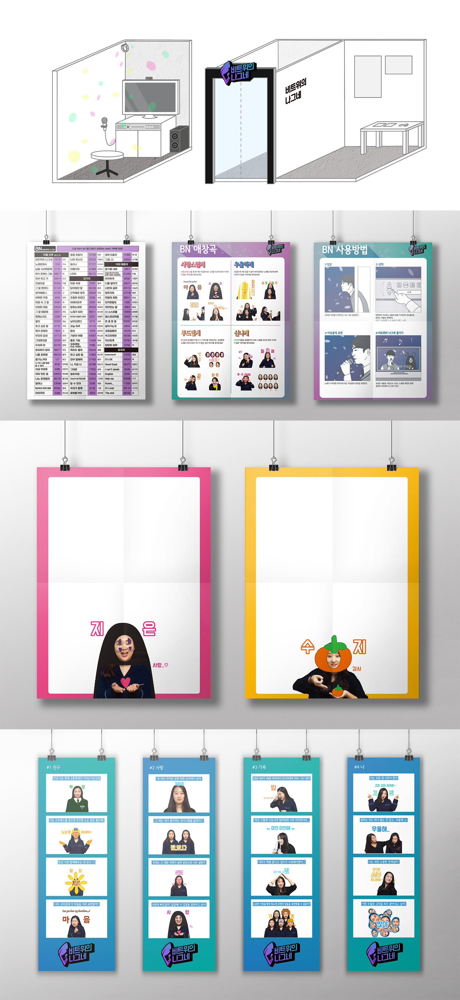
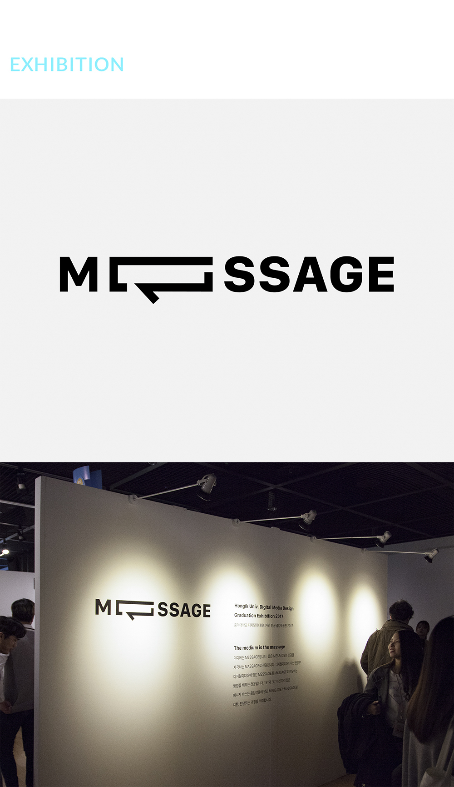
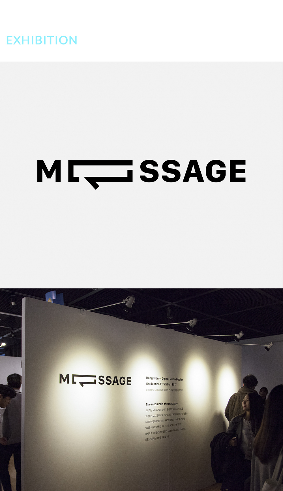

A Traveler On The Beat
비트위의 나그네 (2017)
:음성인식 노래방 프로젝트
New Media Art
Physical Computing
Installation
-
Production Period
2017.03.21 - 2017.10.24
Tool
Processing 3.0 / Logic Pro / Google speech recognition / Fabrication(keyboard module) / Adobe illustrator / Adobe after effects
CONCEPT : 음성인식을 활용한 코인노래방 형태의 자기표현 프로젝트
어느 순간 우리 사회는 마음 속 진지한 생각을 꺼내기 어려운 상황이 되었다.
미디어와 SNS는 발전하고, 클릭 한 번으로 다른 누군가의 많은 것을 알 수 있게 되었지만,
보여주고 싶은 삶과 겉모습이 더 많이 공유되어 갈수록, 진심 어린 생각과 문장들은 ‘오글거린다’ 혹은 ‘진지충’이라는 단어 속에 야유받는다.
그러나 모든 문화와 예술의 시작은 진지한 사유에서 비롯된다. 서툴고 어설픈 날 것의 생각일지라도,
그 문장들은 있는 그 자체로 충분한 가치를 갖는다.
4차 산업혁명 시대에 태어나, 발전하는 미디어의 영향을 온전히 받는 이 시대의 청소년들에게,
우리는 그 가치를 전달하고 싶었다.
사유와 자기표현이 ‘오글거리고 창피한 것’이 아니라 나를 표현하는 즐거운 방식의 하나라는 것을 말이다.
[비트위의 나그네]는 그들에게 익숙한 '코인노래방'이라는 형태의 공간을 제공한다.
그 안에서 사람들은 자유롭게 생각과 감성을 표현한다. 실시간 음성인식과 보코더 효과를 통해 그 문장들은 노래와 이미지로 나타나고, 자기표현은 창피한 것이 아닌 즐거운 경험이라는 메시지를 전달한다.
: Self-expression project using speech recognition of coin karaoke format
Now a days, in our society, it became difficult to say 'serious thoughts'.
Media and social networking are evolving, but sincere thoughts and sentences are teased with the words "cringy".
But the beginning of every culture and art comes from a serious thought.
Even if the sentence is clumsy, that is already valuable in itself.
For youth people of this age who are fully influenced by media, we wanted to convey that value. Self-expression is not "embarrassing" but pleasant expression.
offers a coin karaoke space in a familiar way.
In the space, people freely express their thoughts and feelings. With real-time speech recognition and vocoder effects, sentences appear as songs and images, making self-expression an enjoyable experience.
USER SCENARIOS
1. 부스 안으로 입장한다.
2. 화면에서 지시하는 내용에 맞춰, 컨트롤러에서 원하는 주제를 선택한다.
3. 노래가 시작되면 마이크를 들고, 주제에 맞게 자유로운 생각을 표현한다.
4. 실시간 음성인식을 통해 표현한 내용이 노래방 가사와 이미지로 표현된다.
보코더 효과를 통해 노래로 만들어지는 자신의 목소리를 들으며, 즐겁게 ‘비트위의 나그네’가 된다.
1. Enter the booth.
2. Follow on screen instructions to select the theme you want from the controller.
3. When the song starts, pick up the microphone and express your free thoughts.
4. Through real-time speech recognition, that is represented by karaoke lyrics and images.
Through vocoder effect, listens to your voice as a song, and happily becomes 'A traveler on the beat'.
키보드 모듈과 네오픽셀 LED, 아크릴 컷팅한 스위치 버튼들을 부착하고, 버튼에 전선들을 납땜해 노래방 기기 모양의 컨트롤러를 제작했다.
전면에 코팅된 색상은 카멜레온처럼 각도에 따라 연한 보라빛으로 색이 변화한다.
'신나게'와 같은 각각의 장르 버튼을 누를 때마다, 감정에 적합한 톤으로 읽어주는 음성을 녹음해 좀 더 몰입할 수 있게 했다.
청소년을 대상으로 '사랑, 친구, 가족, 나' 의 4가지 주제에서 단문을 작성하는 설문조사를 진행했다.
이후, 빈도 수가 높은 단어를 위주로 '움짤(GIF)' 컨텐츠를 제작했다.
움짤 컨텐츠는 청소년에게 익숙한 소재로, 보다 친숙하고 즐거운 경험을 줄 수 있도록 90여가지의 다양한 형태로 제작되었다.
we conducted a questionnaire survey on 'love, friends, family, me,' from youth. They wrote short essays on that subject.
Since then, we have produced 'GIF' content based on words with high frequency.
The content is made up of over 90 different types of materials. And that are familiar to young people and designed to give a more intimate and enjoyable experience.
설문조사 자료들.
/ DP PlanPosters
/ Posters
(B-class mood of karaoke)
/ Guest Book
/ 4 cut cartoons
박수지 / SUJI PARK
- Plan
- Programming
(Processing3.0)
- Graphic Design
- Video shooting
- Hardware development
(Keyboard module)
- Fabrication
- Appearance on video
서지은 / JI-EUN SEO
- Plan
- Research
- Graphic Source (GIF)
- Composition
(Logic Pro-Vocoder)
- Graphic Design
- Fabrication
- Appearance on video
 

Exhibition at MESSAGE
(2017 Hongik Univ. Digital Media Design GRADUATION EXHIBITION)
2017 홍익대학교 디지털미디어디자인 전공 졸업작품 전시회 MESSAGE에 참여하였습니다.
-
Hongik Univ. Daehangno Art Center B1.
128-8 Yeongeon Dong, Jongno Gu, Seoul
2017. 10. 27. Fri - 10. 30. Mon
Opening Reception : 2017. 10. 27. Fri. PM 6:00
홈페이지/Hongik_Message2017
페이스북/DMD2017message
브랜딩/DMD Graduation Exhibition
*전시 영상 및 사진 업데이트 예정